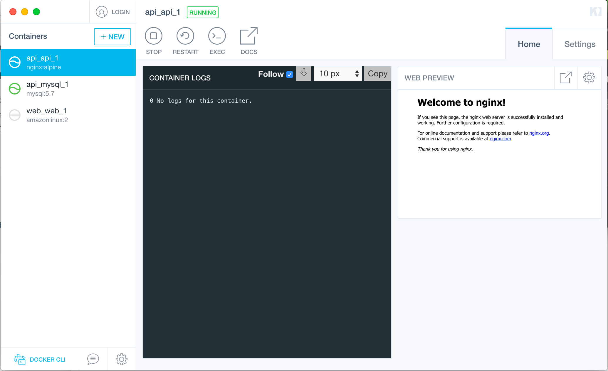

tools
dockerを使用する際に便利なツール
Kitematic¶

KitematicというdockerをGUIベースで扱うためのツールです。
ローカルのDockerの管理はもちろんDockerHubの検索など、非常に高機能で見やすいのでGUIで扱いたい人には良いとおもいます。
私はCLIでしか使わないのでGUIは知らないです。
Install¶
mac
$ brew cask install kitematic
windows
Install Docker Toolbox on Windows | Docker Documentation
docker-clean¶
Dockerリソースを削除するためのコマンド。
Dockerは基本的にエフェメラルであるべきなので脳死で定期的に打っていくといいとおもいます。とてもすき。べんり。
Example¶
現在起動中のcontainerに関連しないリソース(container, image, network, volume)を削除する。
$ docker-clean stop
Dockerのリソース全てを削除する。
起動中のcontainerも削除される点に注意。
$ docker-clean all
Install¶
mac
$ brew install docker-clean
windows
ZZROTDesign/docker-clean: A script that cleans docker containers, images, volumes, and networks.
dlayer¶
Docker imageのレイヤーの詳細を確認するためのコマンドです。
どのプロセス/ファイルが容量を確保してるのか見れるので、imageの軽量化を試みる際に非常に有用です。
$ docker save mylaravel | dlayer -n 5
:
====================================================================================================
746 kB $ #(nop) COPY dir:aa72315e7d707232431f623429d839c619de8d4dfe8ec38f8da936af37d9f359 in .
====================================================================================================
337 kB var/www/html/public/js/app.js
159 kB var/www/html/composer.lock
128 kB var/www/html/public/css/app.css
13 kB var/www/html/bootstrap/cache/services.php
9.2 kB var/www/html/config/app.php
====================================================================================================
25 MB $ set -x && composer install --no-progress --no-dev && addgroup ${GNAME} -g ${GID} && adduser -D -G ${GNAME} -u ${UID} ${UNAME} && chown -R ${UNAME}:${GNAME} ${WORKDIR} && mv /root/.composer /home/${UNAME}/ && chown -R ${UNAME}:${GNAME} /home/${UNAME}
====================================================================================================
3.3 MB var/www/html/vendor/laravel/framework/src/Illuminate
1.9 MB var/www/html/vendor/nesbot/carbon/src/Carbon
1.5 MB var/www/html/vendor/symfony/polyfill-iconv/Resources/charset
1.1 MB home/www/.composer/cache/files/laravel/framework/9bfc7b5a4daf5af99f1c03b2fe4278aadc50b123.zip
743 kB var/www/html/vendor/nikic/php-parser/lib/PhpParser